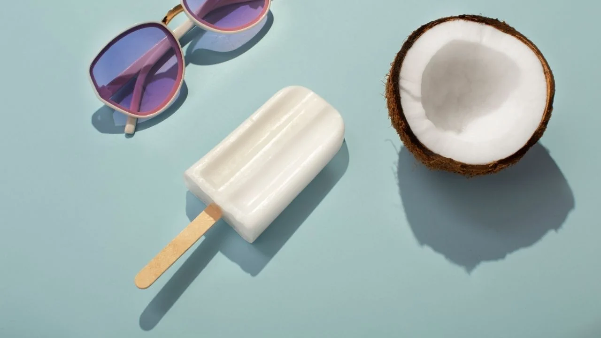

Las ricas y tropicales paletas de coco que tanto nos gustan, son un postre muy refrescante que no requieren
cocción y tan fácil que hasta tus hijos pueden preparar. Lleva a tu mesa los sabores por excelencia de nuestro
paraíso tropical y disfruta del mejor antojo veraniego.

ingredientes
2 tazas leche evaporada
½ cucharadita extracto de vainilla
2 tazas leche de coco
¾ taza azúcar,
paso
Mezclar:Mezcla la leche, vainilla y la leche de coco. Agrega azúcar al gusto.
Congelar: Vierte en los moldes de paleta, pon el palo de la paleta en el centro de cada paleta y lleva
al congelador.
Cuando hayan congelado (mínimo 6 horas o la noche entera), retira de los moldes y a disfrutar del
verano.
Esta receta fue copiada de la pagina:ww.cocinadominicana